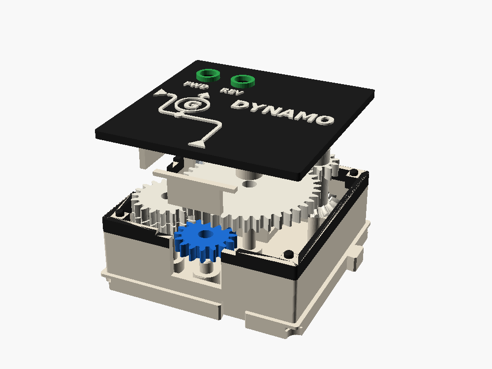

DYNAMO
Readouts · fit-checked · 1x1 cell · cost 12 from S, 14 from W (first guess)
Turn the input and a light comes on. The gears spin a small motor backward, and a motor turned by hand is a generator. The faster you turn, the brighter the light in the lid: the green LED when the line runs forward, the red one when it runs back. The light makes the turning harder, and you can feel it.
There is no battery. The generator and the light are both in this one box, wired inside it (Paul, 2026-10-29). A system of electrical boxes would be a separate project.


What it does
An end box with two ways in and no outputs: W, so it ends a row, or S, so it tops a column. Feed one of them, never both. They turn the same train, so two drives would fight. Function: speed lamp. Brightness follows speed, and which LED lights follows direction.
Ports and lanes
| Port | Side | Lane | Teeth | Layer | Role |
|---|---|---|---|---|---|
| W | W | B | 16 | 1 | input (either) |
| S | S | B | 16 | 2 | input (either) |
Train: S (16, layer 2) → K's 20 (layer 2) → K's 40 (layer 3) → B's 12 (layer 3) → B's bevel 15 (layer 1) → the pinion (10) on the N20's shaft. This is MOTOR's train run the other way. It speeds up 0.8 × 3.33 × 1.5 = x4 to the motor shaft. Three meshes; direction only picks which LED lights.
From W: W (16, layer 1) → J's 20 (layer 1), J's 20 (layer 2) → S's port gear, then on as above. J sits in the south-west corner and turns the S port gear exactly as a neighbor to the south would, at x1. Two more meshes (an even number), so a forward line lights green from either side, and the S port gear turns along when W drives.
Feasibility, in numbers
The generator is an N20 gearmotor, 12 V, 1000 rpm (about 15:1). It is MOTOR's motor with a lower gearbox ratio, so it fits MOTOR's cradle, pinion and spacer unchanged. Turned from outside it makes about 11 mV per rpm of its shaft (12 V at 1000 rpm, less about 1 V that it loses as a motor). The metal gearbox does most of the speeding up, which keeps the printed gears slow.
Why not another motor:
| Generator | Volts per input rpm (with this train) | Drag | Verdict |
|---|---|---|---|
| bare N20 or 130 motor, no gearbox | about 0.003 | low | needs x30 of printed gears, so the printed gears run at thousands of rpm: no |
| N20 12 V 1000 rpm (15:1) | about 0.044 | moderate | chosen |
| N20 12 V 500 rpm (30:1) | about 0.088 | about 2.5 times more | lights from MOTOR too, but too stiff on the crank |
| N20 150 rpm (MOTOR's, 100:1) | about 0.3 | very high | a 100:1 gearbox barely turns backward |
| 28BYJ-48 stepper | high | high | 28 mm across, does not fit 21.6 mm (see brain.md) |
Speed against light (470 Ω, motor winding about 60 Ω). The LEDs are Paul's 5 mm assortment: green 3.0 to 3.2 V and very bright (15,000 mcd at 20 mA), red 2.0 to 2.2 V.
| Input S | Motor shaft | Generator voltage (open) | Green, forward | Red, back | Torque at S, forward |
|---|---|---|---|---|---|
| 44 rpm (MOTOR's ports) | 176 rpm | 1.9 V | dark | dark | about 11 mNm |
| 60 rpm | 240 rpm | 2.6 V | dark | 0.9 mA, a glow | about 11 mNm |
| 75 rpm | 300 rpm | 3.3 V | 0.4 mA, a glow | 2.3 mA | about 11 mNm |
| 100 rpm | 400 rpm | 4.4 V | 2.5 mA, clearly lit | 4.3 mA | about 13 mNm |
| 150 rpm | 600 rpm | 6.6 V | 6.6 mA, bright | 8.5 mA | about 16 mNm |
| 200 rpm | 800 rpm | 8.8 V | 11 mA | 13 mA | about 20 mNm |
| 250 rpm | 1000 rpm | 11 V | 15 mA, full | 17 mA | about 24 mNm |
The CRANK's ports run at roughly 60 to 240 rpm by hand (its wheel turns at half the port speed), so the crank sweeps the whole table.
- Brighter, not flicker. A DC motor makes DC. Its brush ripple at these speeds is several hundred times a second, far too fast to see, so the light reads as steady brightness. What you can see is your hand: a jerky turn gives a pulsing light, which is honest.
- The dead zone. An LED stays dark below its forward voltage: the red one under about 2.1 V (about 50 rpm), the green one under about 3.1 V (about 70 rpm). So going backward lights sooner, a lesson in itself: different colors need different voltages. Above that the light brightens steadily, and our eyes see brightness on a log scale, so 1 mA to 15 mA looks like an even climb. The green is so bright that 1 mA already shows well. Want forward to light sooner? Use yellow (2.0 V) for forward.
- Safe at any speed. The resistor holds the current under about 20 mA up to 270 rpm, and a hard spin only flashes it for a moment. The two LEDs face opposite ways, so each one holds the other's reverse voltage to 2 or 3 V (an LED is rated for only 5 V backward). Nothing else is needed.
Torque. About 11 mNm just to turn it (the motor's own gearbox driven backward, through two printed stages) and up to about 26 mNm at full light. This first figure is an estimate scaled from the N20's no-load current. Measure it on the first print. A hand on the crank gives 40 to 60 mNm, so DYNAMO belongs near a crank: CRANK → TAP or a short column → DYNAMO. That is why the first-guess cost is 12 of the crank's 20. MOTOR's ports turn too slowly to light it.
Printed speeds. At 150 rpm in, K turns 120 rpm, B 400 rpm and the pinion 600 rpm. B is the fastest printed stack in the system: PTFE on its pin.
How it works
The N20 lies flat along the north side, in MOTOR's cradle, with its shaft pointing east. Stack B stands at its shaft end, with the 15-tooth bevel at its foot and a 12-tooth spur on layer 3.
The S port drives K's 20 on layer 2. A W input gets there through J, an idler in the south-west corner with a 20 on layer 1 (meshing W) and a 20 on layer 2 (meshing the S port gear). K's 40 on layer 3 reaches up over the motor (its top is at 14.4, layer 3 starts at 14.8) and drives B's 12. The bevel pair turns the motor shaft.
The motor's two leads go to the two LEDs in the lid, through a 470 Ω resistor. Each LED's dome comes up through a 5 mm hole into a collar on the lid, green beside FWD and red beside REV, and their leads and the resistor lie in the empty layer 4 under the lid. This train has nothing on layer 4.
Electrical: generator, resistor and LED
![Schematic: N20 generator, 470 Ω resistor, green and red LEDs head to tail]()
A motor and a generator are the same machine. Push current in and the shaft turns. Turn the shaft and current comes out. The voltage grows with speed, and it flips when the direction flips.
The two LEDs are wired head to tail (anti-parallel): the green one's + leg (the long one) and the red one's − leg (the short one, flat side) go to R1, the other two legs to motor lead 2. An LED passes current only one way, so current one way lights green and the other way lights red. There is no rectifier, and the light tells you which way the line turns.
Parts list
| Ref | Part | What to buy | Qty | Notes |
|---|---|---|---|---|
| M1 | Generator | N20 gearmotor, 12 V, 1000 rpm, 3 mm D shaft | 1 | not MOTOR's 150 rpm one: that gearbox is too stiff to turn backward |
| D1 | LED, forward | 5 mm green (3.0 to 3.2 V) | 1 | from Paul's assortment |
| D2 | LED, back | 5 mm red (2.0 to 2.2 V) | 1 | any two colors work; the pair keeps each other's reverse voltage under 3.2 V |
| R1 | Resistor | 470 Ω, ¼ W | 1 | 330 Ω is brighter and stiffer, 1 kΩ dimmer and easier |
| Wire | 26 AWG stranded silicone, blue | 2 × 70 mm | ||
| Heat-shrink | 1.5 mm and 2.5 mm | every joint, and over R1 |
No battery, no switch, no fuse. Nothing in the box can push more than a few tens of milliamps.
Which way is green
- Before the gears go in, solder R1 to motor lead 1, and the two LEDs head to tail between R1 and lead 2.
- Spin the motor shaft by hand, clockwise seen from its end. That is how a forward line turns it. The green LED should glow.
- If the red one glows, swap the two motor leads (or the two LEDs' holes).
- With the gears in, a forward crank gives green and a back crank gives red.
Why it is built this way
- One box. A separate generator and a separate light would need an electrical connector standard between boxes. That is a different system.
- The gearmotor backward, not a bare motor. A bare motor needs about 3000 rpm to make 2 V, and printed gears can't run that fast. The N20's metal gearbox can.
- Two plain LEDs, head to tail. They need no rectifier, each one protects the other when the voltage flips, and the color teaches direction. One LED per direction is plenty: the generator only makes tens of milliwatts (Paul, 2026-10-29). A bar of LEDs as a power meter was considered and dropped.
- W and S inputs. The motor and its cradle fill the north side, so both inputs come in from the south-west. S puts it on top of a column (CRANK's N straight into it). W puts it at the end of a row, after a DOUBLE or QUARTER, without a TURN. W goes through the S port gear rather than having a train of its own, so both sides run at the same ratio and light the same color, and the box stays one cell. See STANDARD.md, "Where ports go".
- No capacitor. Smoothing the hand's pulses would take a large one, and it would make the light lag behind the crank. A later version could charge a supercapacitor through a bridge, so the light keeps glowing after you stop. It would lose the green/red direction.
Parts and colors
| Part | Role | Color |
|---|---|---|
| shell, lid (Readouts, dark), spacer, keeper_W, keeper_S, sleeve_K | structure | bone / family |
| port gears W and S | input | blue |
| LED collars on the lid | display | green |
| stack J (20 + 20), stack K (20 + 40), stack B (bevel 15 + 12), pinion | transmission | white |
| bought: N20 12 V 1000 rpm, green and red 5 mm LEDs, 470 Ω, wire, heat-shrink | bought | gray in the model |
Four colors on the plate: bone, family dark, blue and green (white inner gears print in the family color if needed to stay at four).
What it teaches
- A motor run backward is a generator: mechanical energy in, electrical out.
- Voltage grows with speed, and an LED needs a threshold before it lights.
- Energy is conserved. Lighting the LED makes the crank harder to turn, and you feel the light in your hand.
- A DC generator's voltage flips with direction, and an LED is a one-way valve for current (green or red).
How to assemble it
- Wire the motor, R1 and the two LEDs and run the direction test above.
- Drop in the port gears W and S, then J (it has no top cap: K's 40 holds it down), then B (bevel down).
- Press the pinion onto the motor shaft, lower the motor into its cradle 3.5 mm west, slide it east into mesh and drop the spacer behind it.
- Fit K last, its 40 teeth on top, lying over the motor. Then K's sleeve, the keepers, and the lid with the LEDs pushed up into their collars.